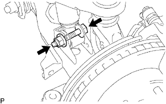

ĐÒN TREO DƯỚI PHÍA TRƯỚC > THÁO |
| 1. THÁO BÁNH TRƯỚC |
| 2. KIỂM TRA ĐÒN TREO DƯỚI TRƯỚC TRÁI |
Lắp các đai ốc moay ơ vào đĩa phanh.
Dùng đồng hồ so, đo độ rơ quá mức của khớp cầu dưới khi bạn ấn vào các đai ốc moay ơ lên và xuống một lực 294 N (30 kgf, 66 lbf).
| 3. NGẮT BỘ GIẢM CHẤN VỚIØ LÒ XO TRỤ |
|  |
Tháo đai ốc và bu lông.
Ngắt bộ giảm chấn cùng với lò xo trụ ra khỏi đòn treo dưới.
| 4. THÁO ĐÒN TREO DƯỚI TRƯỚC TRÁI |
 |
Tháo 2 bu lông và ngắt khớp cầu ra khỏi cam lái.
Đánh các dấu ghi nhớ trên cam điều chỉnh Camber No.1 và khung xe.
Tháo 2 đai ốc, các cam điều chỉnh Camber No.1 và No.2, 2 cam điều chỉnh camber và đòn treo dưới.
Tháo chốt chẻ và đai ốc.
Dùng SST, tháo miếng gá khớp cầu.